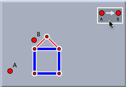
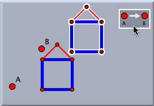
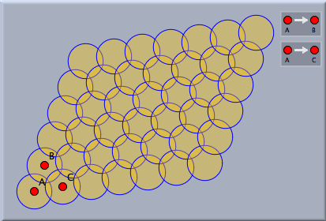
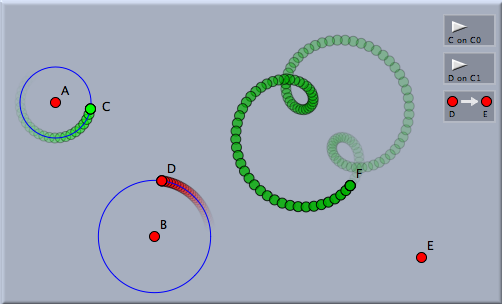

平行移動
平行移動は特定の長さだけ特定の方向へ移動することです。平行移動はある図と写した図のサンプルとして用いられる２点を選択することで定義されます。平行移動を定義するにはマウスで２回クリックする必要があります。
 |  |  |  | |||
| 最初の選択: 平行移動の最初の点を 選択する | マウスカーソルを動かす: ヒントが矢印で出ます | ２番目の点に動かす: 矢印が手助けします | ２番目の選択: 平行移動ができます |
平行移動の定義についての詳細は変換の一般的な使い方でも説明されています。
変換をたくさんの選択した対象に適用させると、すべて同時に作図することができます。この過程で、すべての現れた情報を元の図形から作図した図形へと移すことができます。次の図から、どのように現れた情報が写ったのかがわかります。
 |  |
||
| 元の画像 | 写したあとの状態 |
平行移動の使い方の１つとして、規則的な装飾のような模様を作り出すことができます。つぎの図で示されているのは、２つの違った方向へと２つの変換を繰り返すことによって作り出された模様です。
 |
| 規則的な円の模様 |
変換はある動点の周りで生じる状況についての学ぶためにも使われることもあるかもしれません。そのような場合には、ある点を一種の基点とし、その点を目的の位置に写す平行移動を定義し最終的に平行移動することで、平行移動について学ぶことができます。このような変換の応用は少し難しいので、簡単な技術を例示します。下の画像を見てください。回転している赤いD点と、緑色をしたC点が表されています。緑の点は赤い点の三倍の速さで回っています。回転している赤い点から見ると緑の点の軌跡はどのように見えるでしょうか。このために、平行移動を赤の点 D からある定点 Eへの移動で定義します。それから緑の点にこの変換を適用します。写された点の軌跡は暗緑色で示されます。これが D から見たC の動きです。
 |
| 異なる位置からの見え方の解析 |
同じ技術が 幾何学とCindyLabの節の例２にあります。そこでは、惑星の移動の速度ベクトルのふるまいについて解析しています。
注意
平行移動は、双曲幾何学や、球面の幾何学でも利用できます。そこでは、直線の接続状態を保存するように、点 Aから点 B への平行移動が定義されます。こちらも参照してください
(横山)
Page last modified on Saturday 30 of July, 2011 [11:45:03 UTC].
The original document is available at
http://doc.cinderella.de/tiki-index.php?page=TranslationJ